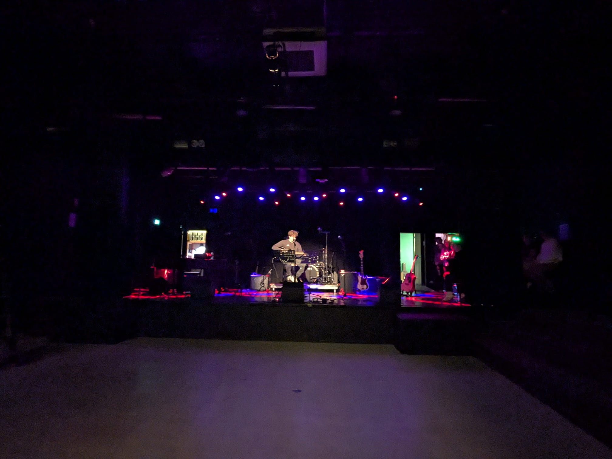

Welcome to Xander's Website
Thanks for visiting. Explore the site to learn more about me and my work.
I'm Xander, 19, from Arnemuiden, a first-year HBO-ICT student at HZ University of Applied Sciences. I am Xander Schroevers, I am 19 years old and live in Arnemuiden. Besides college, I enjoy many different things. Find out more about those on the About page.
My interest in ICT started at a young age, when I began experimenting with tablets, games and other technology. At age 13, I started building computers, and over time, my curiosity expanded to Linux, coding, device modding, and cybersecurity. I enjoy figuring out how things work, solving problems, and learning new skills, which is why I believe ICT is a good fit for me. I want to understand the technology I use every day on a deeper level, particularly how networking, software, security and privacy work. The broad nature of the program appeals to me because it will allow me to build a solid foundation before choosing a specialization. I also look forward to gaining practical experience, improving my coding skills, and collaborating with others on real-world projects.